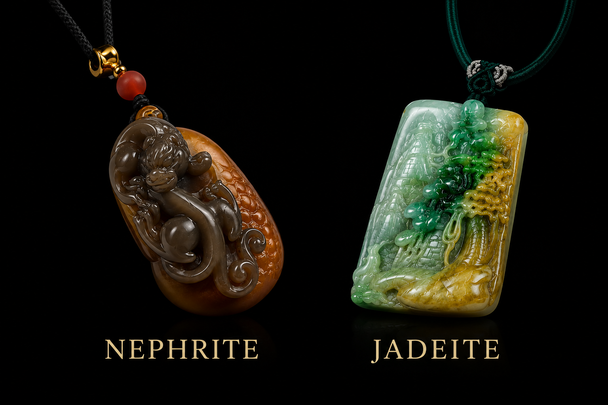
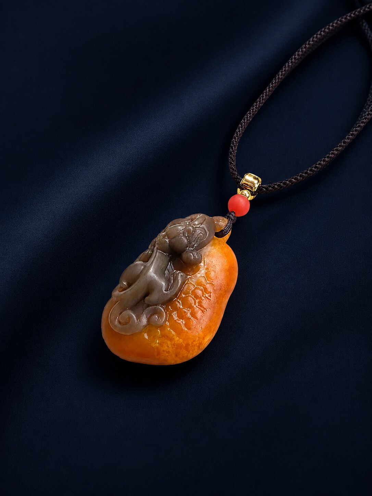
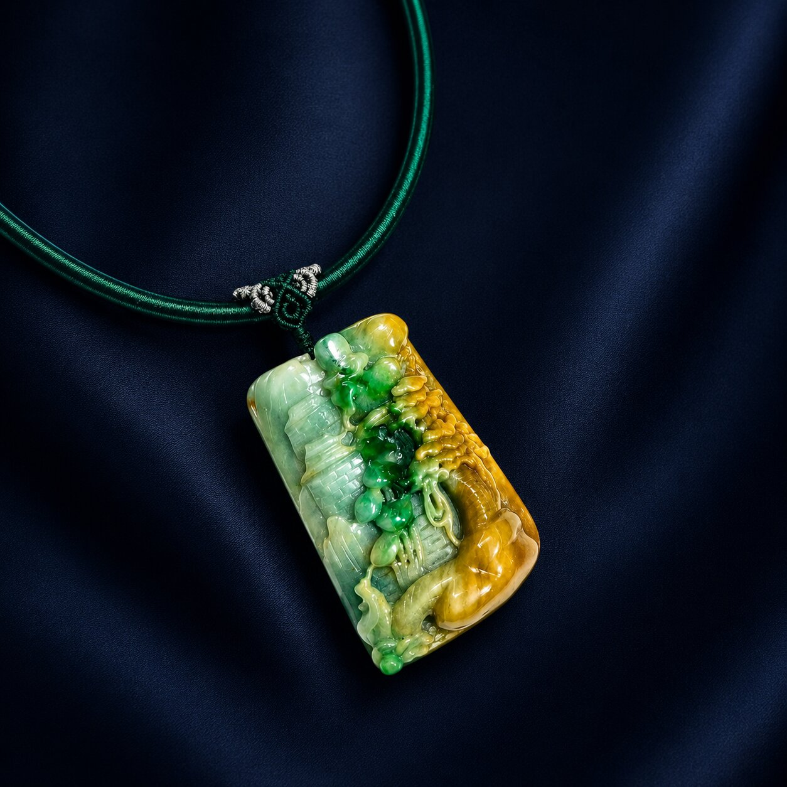
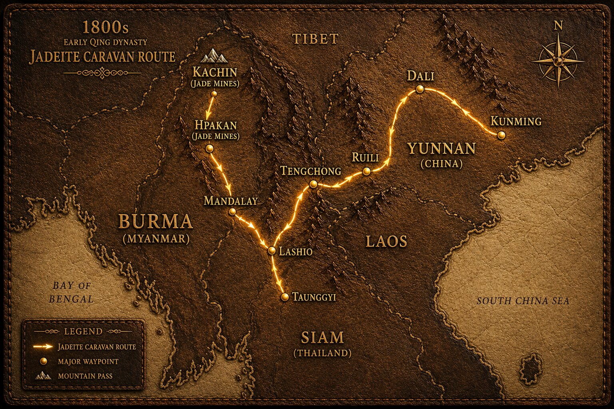

One word, two minerals
Many people use “jade” as a single word for all green or carved stones. In reality, nephrite and jadeite are different minerals with different structures.
Jade is not one single mineral. In gemmology, jade refers mainly to two different materials: jadeite and nephrite. They share cultural importance, but they differ in mineral structure, appearance, rarity, market value and historical use.

The word “jade” is often used casually, but properly speaking, jade refers to two recognised minerals: jadeite and nephrite. Jadeite is generally rarer, often more vivid in colour, and strongly associated with Burmese jadeite. Nephrite is historically older in Chinese jade culture and is known for its tough, fibrous structure.
| Feature | Nephrite | Jadeite |
|---|---|---|
| Mineral identity | A calcium magnesium iron silicate mineral with a tough fibrous structure. | A sodium aluminium silicate mineral with a granular to crystalline structure. |
| Historical use | Widely used in ancient Chinese jade culture, ritual carvings and traditional ornaments. | Became highly admired later, especially through Burmese jadeite entering Chinese and Southeast Asian markets. |
| Appearance | Often waxy, soft-looking, and commonly white, cream, grey-green, spinach green or brownish green. | Can appear more vivid, translucent, icy, lavender, bright green, yellow, red, black or multi-coloured. |
| Market language | Often discussed as nephrite jade. | Often discussed through Type A, Type B and Type C treatment terms. |
| Buyer note | Not fake jade. It is genuine jade, but not jadeite. | Not all jadeite is equal. Treatment status, colour, translucency, texture and craftsmanship matter. |
Many people use “jade” as a single word for all green or carved stones. In reality, nephrite and jadeite are different minerals with different structures.
Jade has been valued culturally for thousands of years. Modern mineral classification came later, which is why traditional language can sometimes feel confusing.
Green colour alone does not prove jadeite. Proper understanding begins with mineral identity, treatment status and professional observation.
For much of early Chinese history, jade culture was built around nephrite. Its toughness made it suitable for ritual objects, symbolic carvings and refined ornaments. This is why nephrite remains culturally important and should not be dismissed as “fake jade”.


Burmese jadeite became highly admired because it can show vivid green, icy translucency, lavender, yellow, red and multi-coloured material. This wider visual range helped jadeite become especially desirable in later Chinese, Southeast Asian and international collecting markets.
Burmese jadeite is closely associated with northern Myanmar and trade routes into Yunnan, China and Southeast Asia. Over time, Chinese merchant networks, maritime trade, and 下南洋 migration helped jade culture travel through places such as Singapore, Malacca, Penang, Kuching, Pontianak and beyond.
Map visuals on this website should be treated as educational illustrations and must be geographically checked before publishing.

When buyers ask whether a piece is “Type A”, they are usually asking about jadeite treatment status. Type A jadeite means natural untreated jadeite. Type B jadeite is chemically treated and commonly polymer impregnated. Type C jadeite is dyed. This terminology should not be loosely applied to every stone simply called “jade”.
Yes. Jadeite is real jade. It is one of the two recognised minerals commonly known as jade.
No. Nephrite is genuine jade, but it is not jadeite. It has its own long cultural and historical importance.
Fine jadeite is generally rarer and can command higher prices, especially vivid green or highly translucent material. However, value still depends on quality, provenance, carving, condition and buyer demand.
Burmese jadeite is admired because Myanmar has produced some of the most desired jadeite material, including vivid green, icy, lavender and multi-coloured varieties.
If you are specifically looking for natural Type A Burmese jadeite, ask for jadeite clearly. The word “jade” alone may refer to either jadeite or nephrite.
Ixchell Jewellery is located at The Adelphi #02-33, Singapore, near City Hall MRT. The boutique specialises in natural Type A Burmese jadeite jewellery and private educational viewing.
Visit Ixchell Jewellery at The Adelphi Singapore to view natural Type A Burmese jadeite bangles, pendants, earrings and collector pieces in person. For a quieter experience, kindly DM us on Instagram before visiting.